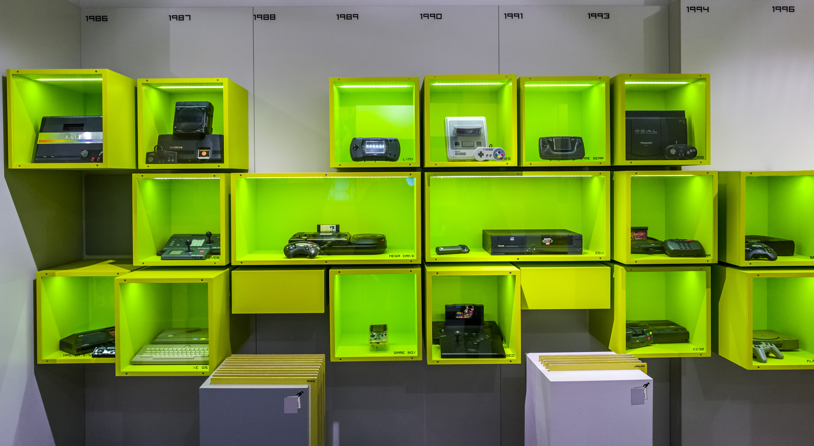

Virtuālā izstāde / 1972-2026
Videospēļu vēsture
Kādreiz pietika ar divām svītrām un bumbiņu uz ekrāna. Vēlāk spēles varēja paņemt līdzi kabatā un spēlēt kopā ar draugiem internetā. Iepazīsti pieturas šajā attīstības ceļā!
Sākt laika ceļojumu
Par izstādi
Šīs izstādes mērķis ir parādīt, kā mainījās videospēles un ierīces, ar kurām tās spēlējam. Esam izvēlējušies spēļu automātus, konsoles, personālos datorus, spēles un grafikas tehnoloģijas, kas palīdz iepazīt dažādus videospēļu vēstures posmus.
Galerija sākas ar Pong un turpinās ar konsolēm, datorspēlēm un grafikas tehnoloģijām. Pievērs uzmanību tam, kā mainās ne tikai spēļu grafika, bet arī vadības pultis un pats spēlēšanas veids. Norādītie gadi ir spēles, ierīces vai tehnoloģijas pirmās iznākšanas gadi; dažādos reģionos tie var atšķirties.
Karuselis
Galerija
Informācijas avoti
- Atari vēsture
- Nintendo vēsture
- Pirmās PlayStation vēsture
- Xbox divdesmitgades atskats
- IBM PC vēsture
- Commodore 64 Smitsona muzeja kolekcija
- DOOM un datorspēļu attīstība Datorvēstures muzejs
- GeForce 256 vēsture
- Steam sākotnējās versijas izlaišana
- World of Warcraft sākums un attīstība
- Minecraft attīstības nozīmīgākie notikumi
- PlayStation 4 vēsture
- PlayStation 5 vēsture
- Steam Deck sākotnējā modeļa izlaišana
- DLSS 4.5 attēla rekonstrukcijas izlaišana 2026. gadā
Attēlu autori un licences
Attēli iegūti no Wikimedia un izdevēju vietnēm. Saites ved uz konkrētajiem avotiem.
Katram posmam ir priekšplāna attēls un atsevišķs fona attēls. Spēļu ekrānattēliem un reklāmas ilustrācijām nav automātiski piemērojama brīva licence.
- Ievada attēls: spēļu ierīču attīstība Berlīnes datorspēļu muzejā: Sergey Galyonkin, 2016. gada 3. novembris. CC BY-SA 2.0.
- Pong priekšplāns: Rob Boudon; attēla apstrāde: Ubcule. CC BY 2.0.
- Pong fona attēls: Bumm13. Publiskais īpašums. Pong vēlākas versijas attēls
- Atari 2600 priekšplāns: Evan-Amos. Publiskais īpašums.
- Atari 2600 fona attēls: Activision. Autortiesības aizsargātas; brīva licence nav norādīta.
- IBM PC priekšplāns: Rama & Musée Bolo. CC BY-SA 2.0 fr.
- IBM PC fona attēls: Microsoft / subLOGIC. Autortiesības aizsargātas; brīva licence nav norādīta.
- Commodore 64 priekšplāns: Evan-Amos. Publiskais īpašums.
- Commodore 64 fona attēls: Time Warp Productions / Rainbow Arts. Autortiesības aizsargātas; brīva licence nav norādīta.
- Nintendo Famicom priekšplāns: Evan-Amos. Publiskais īpašums.
- Nintendo Famicom fona attēls: Nintendo. Autortiesības aizsargātas; brīva licence nav norādīta.
- Game Boy priekšplāns: Evan-Amos. Publiskais īpašums.
- Game Boy fona attēls: Nintendo / The Tetris Company. Autortiesības aizsargātas; brīva licence nav norādīta.
- DOOM priekšplāns: Don Ivan Punchatz / id Software. Autortiesības aizsargātas; brīva licence nav norādīta.
- DOOM fona attēls: id Software. Autortiesības aizsargātas; brīva licence nav norādīta.
- PlayStation priekšplāns: Evan-Amos. Publiskais īpašums.
- PlayStation fona attēls: Namco. Autortiesības aizsargātas; brīva licence nav norādīta.
- GeForce 256 priekšplāns: Hyins. Publiskais īpašums.
- GeForce 256 fona attēls: id Software / Bethesda Softworks. Autortiesības aizsargātas; brīva licence nav norādīta.
- Xbox priekšplāns: Evan-Amos. Publiskais īpašums.
- Xbox fona attēls: Bungie / Microsoft Game Studios. Autortiesības aizsargātas; brīva licence nav norādīta.
- Steam priekšplāns: Valve. Autortiesības aizsargātas; brīva licence nav norādīta.
- Steam fona attēls: Valve. Autortiesības aizsargātas; brīva licence nav norādīta.
- World of Warcraft priekšplāns: Blizzard Entertainment. Autortiesības aizsargātas; brīva licence nav norādīta.
- World of Warcraft fon attēls: Blizzard Entertainment. Autortiesības aizsargātas; brīva licence nav norādīta.
- Nintendo Wii priekšplāns: Evan-Amos. Publiskais īpašums.
- Nintendo Wii fona attēls: David Murphy. CC BY-SA 2.0.
- Minecraft 1.0 priekšplāns: Xbox México. CC BY 3.0.
- Minecraft 1.0 fona attēls: Xbox México. CC BY 3.0.
- PlayStation 4 priekšplāns: Evan-Amos. Publiskais īpašums.
- PlayStation 4 fona attēls: Guerrilla Games / Sony Interactive Entertainment. Autortiesības aizsargātas; brīva licence nav norādīta.
- Nintendo Switch priekšplāns: Evan-Amos. Publiskais īpašums.
- Nintendo Switch fona attēls: Nintendo. Autortiesības aizsargātas; brīva licence nav norādīta.
- PlayStation 5 priekšplāns: Howardcorn33. CC0.
- PlayStation 5 fona attēls: Team Asobi / Sony Interactive Entertainment. Autortiesības aizsargātas; brīva licence nav norādīta.
- Steam Deck priekšplāns: Liam Dawe/GamingOnLinux, PNG version by VulcanSphere. CC BY-SA 4.0.
- Steam Deck fona attēls: Valve. Autortiesības aizsargātas; brīva licence nav norādīta.
- DLSS 4.5 priekšplāns: NVIDIA. Autortiesības aizsargātas; brīva licence nav norādīta.
- DLSS 4.5 fona attēls: CD PROJEKT RED. Autortiesības aizsargātas; brīva licence nav norādīta.
.jpg){kind=link}


.png){kind=link}


.jpg){kind=link}
.png){kind=link}


.png){kind=link}


.png){kind=link}